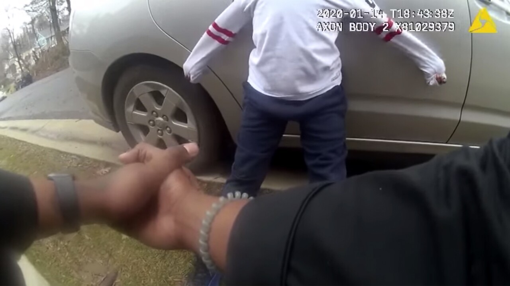
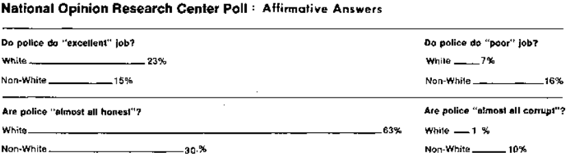
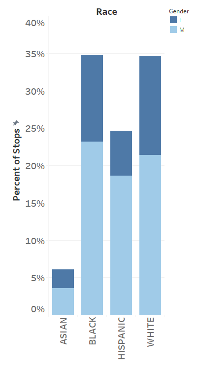
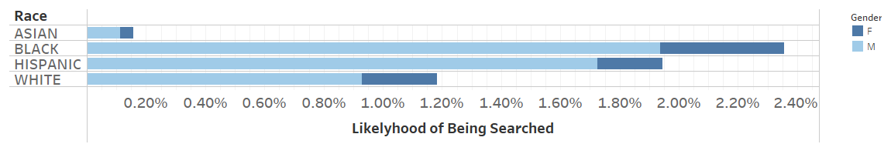
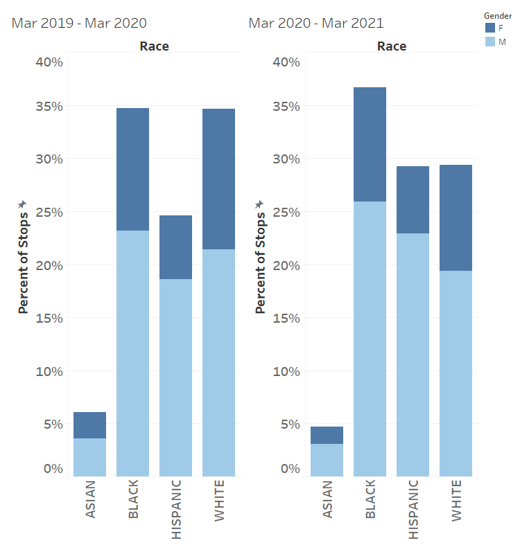

Introduction
Montgomery County, Maryland, named after general Richard Montgomery, is the largest county in Maryland, located adjacent to the nation's capital. Following the death of George Floyd and the Black Lives Matter protests in March of 2020, Montgomery County law enforcement promised changes would be made to end police discrimination in the county and put new laws in place, such as a use-of-force law. Using an open government data set on traffic stops in Montgomery County, we investigate whether these legal changes and the implementation of policies have an impact on racial biases within policing via traffic stop data. The data set provides information about the demographics of the person stopped, information on when, where and why they were stopped, and information about the outcome of the stop. Traffic stop data is a useful metric that can act as a tool to measure racial bias in policing, but it has its limitations, such as a lack of detail on important events that may have occurred during the stop, like use of force. In our analysis we focus on the time periods of March 1st, 2019 - March 1st, 2020 and March 1st, 2020 - March 1st, 2021. In doing so, we are able to compare trends from before and after the death of George Flloyd and the increased political pressure of the Black Lives Matter movements and public call to end police discrimination. By comparing the racial demographics of traffic stops from March 1st, 2019 - March 1st, 2020 with data from March 1st, 2020 - March 1st, 2021 we were able to gain an understanding of whether Montgomery County law enforcement has made any progress towards racial equality in policing. We found that despite there being a multitude of policies implemented within the county to decrease racial discrimination by the police, the policies had little impact on racial biases within the Montgomery County Police Department.
Figure 1 (Edwards et al.)

There are a lot of pieces that play into police discrimination, such as racial profiling, illegitimate search and seizures, false arrests, police brutality, and verbal abuse. Police brutality specifically has been an important topic of discussion in the wake of the killing of George Floyd and the Black Lives Matter movement. As discovered in Edwards et al. (2019 Fig. 1), Black men are about 2.5 times more likely to be killed by the police than White men, Black women are about 1.4 times more likely to be killed by the police than White women, and Latino men are between 1.3 and 1.4 times more likely to be killed by the police than white men. Additionally, a study done on policing and race found that black drivers were pulled over disproportionately more than white drivers and were twice as likely to be searched, but were slightly less likely to get a ticket (Horn, 2022). This suggests that the Black drivers were stopped on the pretext that they had done something wrong because of their race, but were let go once the officer realized they did not violate any laws.
The consideration of police brutality and other factors of police discrimination play a crucial role in determining if policing changes have been made. Because our dataset does not include all of this information, our analysis cannot give a complete picture of police discrimination and progress toward ending discrimination in Montgomery County. What our analysis on traffic stops can offer, however, is insight into racial profiling by the Montgomery County Police. Racial profiling is the “discriminatory practice by law enforcement officials of targeting individuals for suspicion of crime based on the individual's race, ethnicity, religion or national origin” (American Civil Liberties Union, n.d.). An example of racial profiling is using race to determine which drivers to stop for traffic violations, or, similarly, deciding to conduct a search based on someones race. Racial profiling is the first layer of police discrimination preceding other discriminaotry acts, such as illegitimate search and seizures and use of force.
Figure 2 (Associated Press)
Montgomery County body cam footage
Racial disparities shown within Montgomery County police data suggest discriminatory policing within the county. A report from the Office of Legislative Oversight uncovered multiple significant statistics, such as that in 2018 Black residents of Montgomery County were subject to 32% of all traffic stops and 55% of cases that involved use of force by the officer, despite only making up 18% of the population (Iannelli, 2020). Additionally, in 2019 statistics showed that black men were three times more likely, and latino men were twice as likely, to receive a traffic violation than white men (Iannelli, 2020). On top of that, in March of 2021, body camera footage of a Montgomery County police officer shows an officer screaming at and threatening a five year old black boy (dcist 2021). Following the Black Lives Matter protests and the killing of George Floyd in 2020, Montgomery County lawmakers and law enforcement promised change and equality, such as a use-of-force law that demands officers report when they see colleagues using excessive force (Tan & Morse, 2021) and a more recent legislation that requires increased transparency of body-camera footage. In addition, the state of Maryland repealed the police bill of rights and “raised the bar for officers to use force; [gave] civilians a role in police discipline for the first time; restrict[ed] no knock warrants; mandate[ed] body cameras; and open[ed] some allegations of police wrongdoing for public review” (Wiggins & Cox, 2021). Moreover, Congress passed the George Floyd Justice in Policing Act in June of 2020. This bill established a framework to prevent racial profiling by law enforcemnt at federal, state, and local levels by “[lowering] the criminal intent standard—from willful to knowing or reckless—to convict a law enforcement officer for misconduct in a federal prosecution, [limiting] qualified immunity as a defense to liability in a private civil action against a law enforcement officer, and [granting] administrative subpoena power to the Department of Justice (DOJ) in pattern-or-practice investigations” (H.R.7120 - 116th Congress (2019–2020): George Floyd Justice in Policing Act of 2020, 2020). Clearly, efforts toward change have been made, but have any of these new laws decreased racial discrimination in Montgomery County policing? Using this data, we aim to uncover if any progression has been made toward ending law enforcement discrimination in Montgomery County through uncovering trends in racial profiling during traffic stops.
Figure 3 (Smithsonian)
:focal(-528x-528:-527x-527)/https://tf-cmsv2-smithsonianmag-media.s3.amazonaws.com/filer/db/be/dbbe83d7-7e01-4508-b66d-21f8271d58f9/cwccc9_1.jpg)
An Alabama State Trooper swings his baton at the head of the then-25-year-old Congressman John Lewis on March 7, 1965
When exploring literature covering the influence of race on traffic violations and outcomes, we found an overwhelming amount of data uncovering discriminatory police practices. Kelsey Shoub, political science professor at the University of South Carolina analyzed 20 million traffic stops across the US to uncover police discrimination of people of color. The results were significant. A few conclusions drawn from the analysis were that Blacks were 63% more likely to be stopped despite spending 16% less time on the road, and 95% more likely to be stopped when time on the road was accounted for. Additionally, Blacks were 115% more likely to be searched, despite statistics showing that contraband was more likely to be found in vehicles of whites (Horn, 2022). The literature also examined additional factors, such as age and location, that influence the frequency and outcomes of traffic stops of people of color. For instance, Tillyer and Engel (2010), found that warnings and citations were disproportionately issued to young, Black, male drivers. Moreover, the article “Policing Race: The Racial Stratification of Searches in Police Traffic Stops” shows that searches are more likely in stops of Black drivers than in those of White drivers, especially when stopped by White officers (Rojek et al., 2012). In addition to that we also gained a better understanding on how racial profiling goes on to effect people throughout their lives. As revealed by Chenane et al. (2019), citizens stopped for traffic violations, especially those who perceived unfair treatment, are significantly less likely to seek help from the police and/or report non-crime and emergency situations.
While the findings from this research are striking, it’s not surprising. In the wake of George Floyd’s murder and the successive Black Lives Matter protests, the idea of systemic racism, specifcally in policing, became far more apparent to many citizens of society. It illustrated to White people just how corrupt the legal system is, and reiterated to people of color that they are not treated fairly. Others, however, resisted the idea that our legal system is corrupt and tried to rationalize the murder. These are the same people who also fueled the All Lives Matter and Blue Lives Matter movements that refuse to acknowledge that not all lives are valued equally. Police discriminination and police brutality has been an issue ever since the very first police department was established in Boston in 1838. In facr, before police departments were offically establsihed, they were slave patrols designed to “maintain the economic order and to assist the wealthy landowners in recovering and punishing slaves who essentially were considered property” (A brief history of slavery and the origins of American policing, 2021). In 1927-1928, the Illinois Association for Criminal Justice conducted a survey intended to analyze causes of high crime in Chicago and Cook County, but the survey also uncovered data about police activity. The survey found that despite only making up 5% of the area's population, Black people made up 30% of all people killed by the police (Magazine). Additionally, findings from the U.S. President’s Commission on Law Enforcement and the Administration of Justice, a commision who studied American policing to reduce crime and promote the law, and the Kerner Commission, a commission that investigated the outbreak of race riots in 1967, found that “relations between the police and minority communities were very poor and that at the hands of the police, Blacks experienced differential and heavy-handed justice” (Brown, 2020). The information presented suggests a long history of discriminatory policing within the United States.
Figure 4 (The Challenge of Crime in a Free Society)
1967 Survey by The President's Commission on Law Enforcement and Administration of Justice
We also investigated the impact of the intersection of race and gender within traffic stops due to the assumption that females are stopped less and receive less harsh treatment. A study done by the Prison Policy Initiative used data from the FBI Uniform Crime Reporting Program to investigate gender and racial disparities in both traffic and street stops. The stops analyzed included arrests, searches, and use of force. The study discovered surprising trends, such as the amount of female arrests and use of force towards females has increased significantly since 1999, both race and gender affect the outcome of traffic stops, race is a more prevalent factor in street stops for men whereas race is a more prevalent factor in female arrests during a stop, black and latino men experience the most use of force, and black women experience similar rates of use of force as white men (Initiative, 2022). We will be including a race/gender analysis on top of our original findings regarding race to explore this topic further.
Data Critique
The Traffic Violations Open Data Portal from Montgomery County, Mayland contains traffic violation information from all electronic traffic violations issued in the county from January 1st, 2012 to March 1st, 2022 (as of today). The data set is managed by MCG ESB Service and is updated daily. The data set is organized in a table with columns representing categories, and rows representing each recorded traffic violation. The categories are Seqid, Date of Stop, Time of Stop, Agency, subAgency, Description, Location, Latitude, Longitude, Accident, Belts, Personal Injury, Property Damage, Fatal, Commercial License, HAZMAT, Commercial Vehicle, Alcohol, Work Zone, Search Conducted, Search Disposition, Search Outcome, Search Reason, Search Reason for Stop, Search Type, Search Arrest Reason, State, Vehicle Type, Year, Make, Model, Color, Violation Type, Charge, Article, Contributed To Accident, Race, Gender, Driver City, Driver State, DL State, Arrest Type, Geolocation. The data set is consistent through all the entries making the data consistent, organized, and easy to understand. There are a lot of different categories to describe and analyze for each traffic stop, and the majority of this information is consistent across all the 1.77+ million recorded traffic stops. The design of the dataset (rows and columns) makes it easily sortable too. Using Tableau, we plan on sorting the data first by race and gender, and then by other categories such as warnings, tickets, searches, arrests, etc. to search for trends in the discriminatin of people of color and gender over the years. We made two visualizations for each combination of categories, one from March 1st, 2019 - March 1st, 2020 and another from March 1st, 2020 - March 1st 2021 to investigate if the laws that were implemented by Montgomery County to prevent disrimination were upheld by police officers. We then took the information and visualized it within Tableau to further our analysis. The dataset includes everything we need to give a thoughtful analysis on racial profiling, however, it is missing information such as the age of the violator, and the age, race, and gender of the officer, that would help to deepen our analysis even further. Additionally, the dataset could benefit from the addition of whether any force or verbal abuse was used, along with the length of each stop and a detailed description of what happened during the stop. A study done by the American Psychological Association in 2019 found age to be an incredibly strong predictor for police officers who are in support for responsible force, as older officers reported to have more self-confidence and less support for coercive policing than younger policemen and women. Along with that, their research yielded that more women police officers supported working with the public in an ethical manner (American Psychological Association, 2019). So with that, although our dataset does give a multitude of important information and trends, age is definitely a limitation in our dataset and things would be more clear if MCPD began documenting things such as age along with the limitations discussed above within their traffic stop dataset.
Findings
Figure 5
When comparing the racial demographics of police stops with those of the Montgomery County population, one finds clear bias in the stops, searches, and outcomes of the traffic stops of communities of color, specifically the Black and Hispanic communities. According to the census data reported, Whites make up 60% of the population, Blacks make up 20.1%, Hispanics make up 20.1%, and Asians make up 15.6%. According to our findings, from March 1st, 2019 through March 1st, 2020, Black people made up 32.39% of all stops despite only making up 20.1% of the population, whereas Whites made up 32.30% of stops and made up 60% of the population. Similarly, Hispanics make up 22.94% of all stops, despite only making up 20.1% of the population. The search percentages of Blacks also beat that of Whites, with 2.36% of stops of Black people searched, and White stops resulting in a search 1.18% of the time. Hispanics also get the short end of the stick here, with 1.94% of all Hispanic stops resulting in searches. As one might expect, data on searches and arrests show more Black and Hispanic arrests than white arrests by a significant amount, with 26.7% of searches on Black people resulting in an arrest, 27.7% of searches on Hispanics resulting in an arrest, and only 16% of searches on Whites resulting in an arrest. Citations followed a similar trend, with searches on Blacks resulting in a citation 8.6% of the time, searches on Hispanics resulting in a citation 4% of the time, and searches on Whites resulting in a citation only 2.2% of the time. When it came to warnings, 4.8% of Black searches result in warnings, 1.4% of Hispanic searches, and 2% of White searches. The most common arrest reason for all races was “Stop”, which made up 15.1% of Black arrests, 21.9% of Hispanic arrests, and 11.3% of White arrests. Coming in a close second for arrests on Black people was “Null”, representing 13.4% of arrests, versus only 5.5% for Hispanics, and 4.3% for Whites. Little to no discrimination against Asians or Native Americans were observed. This data is consistent with findings in our research in that the people of color in Montgomery County, specifically Black and Hispanic people, are more likely to get pulled over, searched, and arrested by the police than White people.
Figure 6
The data supports the general societal assumption that women are stopped less than men. Men made up 66.78% of all stops and represented 48.4% of Montgomery County’s population, whereas women only made up 33.22% of stops despite making up 51.6% of the population. When we considered the intersection of race and gender, we found that both male and female people of color were discriminated against by the police. Mainly, Black males and females, and Hispanic males. From March 1st, 2019 to through March 1st, 2020, Black males accounted for 21.63% of all stops and Black females 10.76%, whereas White males accounted for 19.96% of all stops, and white females 12.34%. Additionally, Hispanic males accounted for 17.37% of all stops and Hispanic females accounted for 5.57% of stops. When it came to searches, 0.42% of Black female stops resulted in searches along with 1.94% of black male stops. Hispanics experienced similar trends, with 0.22% of female stops and 1.72% of male stops resulting in a search. Out of the searches on Black females, 5.0% resulted in an arrest and 21.7% resulted in an arrest on black males. 3.2% of searches on Hispanic females and 24.5% of searches on Hispanic males resulted in arrests. Moreover, 1.5% of searches on Black females resulted in a citation, and 7.1% for Black males. Searches on hispanic females resulted in a citation 0.4% of the time, while Hispanic male searches resulted in a citation 3.6% of the time. 0.1% of Hispanic males received a SERO (Safety Equipment Repair Order) with less than 0.1% of all other races receiving a SERO. Finally, 0.6% of searches on Black females resulted in a warning, and 4.2% of searches on Black males too. Searches on Hispanic females resulted in a warning 0.1% of the time, and Hispanic males 1.3% of the time. Reasons for arrest were similar for both genders with the most common being “Stop” and “Null” coming in second. This data is consistent with the research we explored in that women get pulled over, searched, and arrested less than men, but racial disparities still linger. Black females, Black males, and Hispanic males continue to be overrepresented in the data.
Figure 7
When comparing the data from March 1st, 2019 to through March 1st, 2020 and March 1st, 2020 through March 1st, 2021, there appears to be very little progress made toward change regarding police discrimination and racial profiling in Montgomery County. This suggests that the laws and policies put in place have not had much impact. For example, overall stops of Black people increased 2.08% from 32.39% to 34.47%, and Hispanic stops increased 4.55% from 22.94% to 27.49%. Searches conducted on Black people increased from 2.36% to 4.05%, and searches on Hispanics increased from 1.94% to 3.34%. There was a 1.6% decrease in the amount of searches on Black people resulting in arrests, however, Hispanics saw a 1.4% increase in the same category. Black searches saw a 1% increase in the amount of citations given, and Hispanics saw a 0.9% increase in the amount of searches resulting in citations. Black searches resulting in warnings decreased 0.1%, while Hispanic searches resulting in warnings increased 0.1%. A 0.9% decrease was noticed in the amount of Black “Null” arrests, but Hispanics once again suffered a slight increase in this area by 1.7%. This data suggests that little improvement has been made. People of color are still significantly overrepresented in overall traffic stops, as well as in other categories like searches and arrests, with Black people still making up 34.47% of all stops despite only being 20.1% of the population, and Hispanics making up 27.49% of all stops despite also being 20.1% of the population.
Conclusion
Analyzing Montgomery County traffic stop data offered us insight into trends of racial profiling and discrimination within the county. A multitude of laws, such as the repeal of the police bill of rights, have been put in place to reduce the larger police discrimination issues, such as excessive use-of-force on people of color, however, without any data on categories such as use-of-force, verbal abuse, etc. we were unable to analyze these topics or draw conclusions about the progress towards ending police discriminaiton as a whole. What we were able to focus on was racial profiling. Racial profiling lays the foundation for the issues within police discrmination, such as use-of-force and illegitimate search and seizures. As mentioned earlier, Congress enacted the George Floyd Justice in Policing Act to to prevent racial profiling by law enforcemnt specifically. As discussed earlier, racial profiling is a significant factor in traffic stops, so looking for improvement is a great place to begin looking for general improvements within police discrimination. As illustrated by the data, little progress appears to have been made in reducing the amount of racial profiling of Montgomery County citizens. People of color, Black people and Hispanic people specifically, are still overrepresented in Montgomery County traffic stops despite the events of 2020 and the efforts made toward instigating change. Although this information only represents a fraction of the whole picture of police discrimination, racial profiling lays the ground work for more serious and damaging forms of racial discrimination within policing. Moving forward, future research involving categories such as use of force and verbal abuse should be conducted. Additionally, nationwide research on whether any change toward a non-discriminatory law enforcement system has been implemented throughout the country would be beneficial as well.